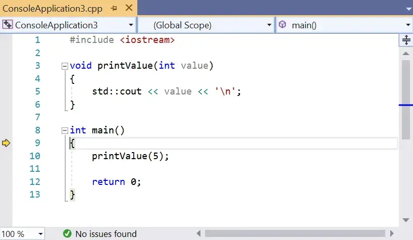
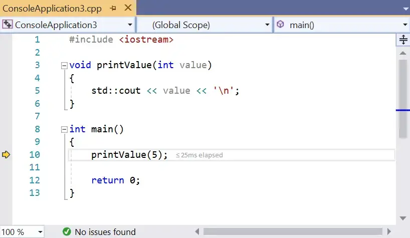
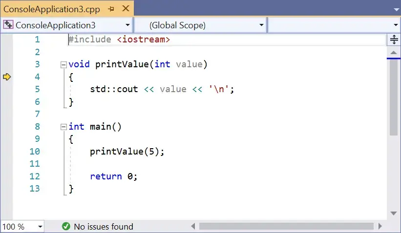
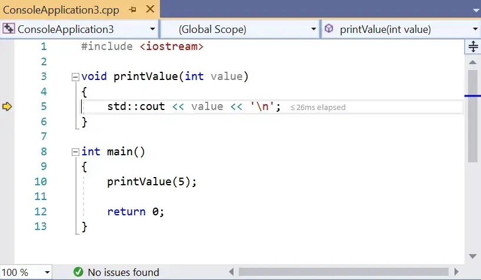

当你运行程序时，程序会从 main 函数的顶部开始执行，然后逐条执行，直到程序结束。在程序运行的任何时间点，程序都在跟踪很多事情：你正在使用的变量的值，调用了哪些函数(这样当这些函数返回时，程序就知道要返回到哪里)，以及程序中的当前执行点(这样它就知道下一步要执行哪条语句)。所有这些被跟踪的信息都被称为程序状态(或简称为 state)。
在前面的课程中，我们介绍的调试方法都需要对代码进行修改，例如添加打印语句或使用日志工具。这些是在程序运行时检查程序状态的简单方法。尽管如果使用得当，这些方法是有效的，但也有缺点：它们需要修改代码，这需要时间，并可能引入新的错误，并且它们会使代码变得混乱，使现有的代码更难理解。
我们之所以这么做，是因为我们基于一个假设——即代码一旦开始运行，程序就会运行到结束(只会在接受输入时暂停)，我们没有机会在任何我们想要的时候进行干预和检查程序的结果。
然而，如果我们能够消除这种假设呢？幸运的是，大多数现代IDE都提供了一种称为调试器的集成工具，该工具正是为此而设计的。
调试器#
调试器是一种计算机程序，它允许程序员控制另一个程序的执行方式，并在该程序运行时检查该程序的状态。例如，程序员可以使用调试器逐行执行程序，在整个过程中检查变量的值。通过将变量的实际值与预期值进行比较，或者观察整个代码的执行路径，调试器可以极大地帮助跟踪语义(逻辑)错误。
调试器有两大核心功能：精确控制程序执行的能力，以及查看(和修改，如果需要的话)程序状态的能力。
早期的调试器，如 gdb，是具有命令行接口的独立程序，程序员必须键入神秘的命令才能使它们工作。后来的调试器(如Borland的[turbo debugger]的早期版本(https://en.wikipedia.org/wiki/Turbo_Debugger))仍然是独立的，但有自己的“图形化”前端，能够使其更加易用。目前大多数现代IDE都有一个集成的调试器——也就是说，调试器使用与代码编辑器相同的接口，因此你可以使用编写代码时使用的相同环境进行调试(而不必切换程序)。
几乎所有的现代调试器都包含相同的基本功能标准集——然而，在访问这些功能的菜单如何使用方面几乎没有一致性，键盘快捷键的一致性甚至更低。尽管我们的示例将使用Microsoft Visual Studio的截图(我们也将介绍如何在Code::Blocks中完成所有操作)，但无论你使用的是哪种IDE，都应该不难弄清楚如何访问我们讨论的每个功能。
本章的剩余部分将学习如何使用调试器。
如果你正在编译项目使用的是正式版本的配置项，调试器的功能可能没有办法正确运行（比如：当你尝试单步调试你的程序，程序会直接运行而不是进入单步调试）
!!! example “Code::Blocks 用户”
如果你使用的是Code::Blocks，你的调试器设置是否正确都有可能，让我们来确认一下。
首先, 去到 _Settings menu > Debugger…_. 然后, 打开在左边的 _GDB/CDB debugger_ 树形菜单 , 并选择 _Default_. 然后一个类似这样的弹窗会弹出:

如果你在“Executable path”这一项看到一个红色长条, 你需要选中到你的调试器, 点击 _Executable path_ 选项右侧的 _…_ 按钮，然后找到你操作系统中的 “gdb32.exe” 应用程序，（我这里是在 _C:\Program Files (x86)\CodeBlocks\MinGW\bin\gdb32.exe_。然后点击 _OK_。）
!!! example “Code::Blocks 用户”
有报告称，Code::Blocks集成调试器（GDB）在识别某些包含空格或非英文字符的文件路径时可能会出现问题。如果调试器在你学习这些课程的过程中出现故障，这可能是原因之一。
单步调试#
在开始调试器的探索之前，我们先检查一些能够允许我们控制程序执行方式的调试工具。
单步调试是一组相关调试器特性的名称，这个特性使我们能够一条一条地执行代码。
我们将逐步介绍一系列单步调试相关的指令。
单步进入#
“单步进入” 命令会执行程序正常执行路径中的下一条语句，然后暂停程序的执行，这样我们就可以使用调试器来检查程序的状态。如果正在执行的语句包含函数调用，“单步进入” 操作会使程序跳转到被调用函数的开头并在那里暂停。
让我们来看一个非常简单的程序：
#include <iostream>
void printValue(int value)
{
std::cout << value << '\n';
}
int main()
{
printValue(5);
return 0;
}让我们通过 单步进入 命令来调试这个程序.
首先，定位到某行代码，然后执行 单步进入 命令。
!!! example “Visual Studio 用户”
在 Visual Studio 中, 可以通过 _Debug menu > Step Into_ 执行 _单步进入_ 命令, 或者也可以按下快捷键 F11。
!!! example “Code::Blocks 用户”
在 Code::Blocks 中, 可以通过 _Debug menu > Step into_执行 _单步进入_ 命令, 或者也可以按下 Shift-F7。
!!! example “其它编译器”
如果使用的是其它IDE, 你应该可以在 Debug 或者 Run 菜单下找到类似上面的 _单步进入_ 命令
当你的程序没有运行或者是首次执行调试命令，你可能能看到发生了很多事情：
- 如有需要程序会重新编译。
- 程序会准备运行，因为我们示例代码是一个控制台程序，一个用于控制台输出的窗口将会被打开，但是内容是空白的，因为目前还没有任何输出产生。
- 你的 IDE 可能会打开一些名称类似 “Diagnostic Tools”，“Call Stack” 以及 ““Watch”” 的诊断窗口，我们后面会介绍他们，但现在请先忽略。
因为我们执行了 单步进入，你应该会在 main (第9行) 函数的左大括号旁边出现了一个标记，在 Visual Studio 中，这个标记是一个黄色的箭头（Code::Blocks中是一个黄色的三角形），如果你使用的是其它IDE，你应该能够看到一个类似意图的标记。

这个箭头标记了程序下一步要执行的位置，在示例中，调试器告诉我们下一行要执行的代码是_main_ (第9行) 函数的左大括号。
选择 单步进入（根据你的 IDE 使用合适的命令）来执行左大括号，然后箭头会移动到下一个语句（第10行）

上图含义是下一行要执行的语句是调用函数 printValue 。
再次选择 单步进入，因为语句中包含了一个对 printValue 函数的调用，我们使用 单步进入 命令将会进入被调用函数，箭头将会指向_printValue_(第4行)函数体的最顶上。

再次选择 单步进入 执行 printValue 函数的左大括号，箭头会移动到第5行。

再次选择 单步进入，会执行 std::cout << value 语句，然后箭头移动到第6行。
如果出现了这样的情况，你将会看到IDE打开了一个新的代码文件，箭头标记会移动到一个名叫 运算符 ”<<” 的函数上（这个函数是标准库的一部分）。关闭这个刚刚打开的代码文件，然后执行 单步跳出 这个调试命令（见下文“单步跳出”章节）。
现在std::cout << value这行语句被执行，我们应该能够看到控制台窗口上出现了一个 5 。
再次选择 单步进入 执行 printValue 的右大括号。然后 printValue 函数执行完毕，控制权回到 main 函数中。
你将会看到箭头再次指向了 printValue 函数！
你可能会认为调试器试图再次调用 printValue 函数，但实际上，调试器是要告诉你他从函数调用中返回了。
再选择 单步进入 三次。此时，我们已经执行了程序中的所有行，调试结束了。有些调试器会在此时自动终止调试会话，有些调试器可能不会。如果你的调试器没有，你可能需要在菜单中找到 “Stop Debugging” 命令（在 Visual Studio 中，这是在 Debug > 停止 Debugging 下）。
注意 Stop Debugging 可以在调试过程中的任何时候用于结束调试会话。
恭喜，你现在已经遍历了一个程序并查看了每一行代码的执行！
单步跳出#
与 单步进入 一样，单步跳出 命令执行程序正常执行路径中的下一条语句。不同之处在于，单步进入 将进入函数调用并逐行执行它们，单步跳出 将一次性完整的执行整个函数，中间不会有任何停歇，并在函数执行后将控制权返回给你。
!!! example “Visual Studio 用户”
在 Visual Studio 中，可以通过 _Debug menu > Step Over_ 或按 F10 快捷键访问 _单步跳出_ 命令。
!!! example “Code::Blocks 用户”
在 Code::Blocks中，_step over_ 命令称为 _Next line_ ，可以通过 _Debug menu > Next line_ 或按F7快捷键访问。
让我们来看一个单步跳出函数调用 printValue 的例子：
#include <iostream>
void printValue(int value)
{
std::cout << value << '\n';
}
int main()
{
printValue(5);
return 0;
}首先，使用 单步进入 命令单步调试程序，直到程序执行标记到第10行：
现在，选择 单步跳出 命令。调试器将会执行这个函数（控制台窗口将会打印值 5 ）然后返回控制权给下一条语句（第12行）。
单步跳出 命令提供了一种便利的方式，来跳过那些你明确已经工作、或者当下对调试期其内容并不感兴趣的函数。
单步跳过#
不同于上面两种单步调试命令，单步跳过 并不只是执行下一行代码，而是执行当前执行函数体中的所有剩余代码，然后在函数返回时将控制权返回给你。
!!! example “Visual Studio 用户”
在 Visual Studio中，可以通过 _Debug menu > Step Out_ 或按 Shift-F11 组合快捷键访问 _单步跳过_ 命令。
!!! example “Code::Blocks 用户”
在 Code::Blocks中，可以通过 _Debug menu > Step out_ 或按 Ctrl-F7 组合快捷键访问 _单步跳过_ 命令。
现在让我们看一个在同一程序中使用上面所有的命令的示例：
#include <iostream>
void printValue(int value)
{
std::cout << value << '\n';
}
int main()
{
printValue(5);
return 0;
}通过 单步进入 调试代码直到程序运行到 printValue 函数体内，此时执行标记将会标记在第4行。
然后选择 单步跳出，你将能看到值 5 出现在控制台输出窗口上，当函数执行结束，调试器也将把控制权返回给你（此时执行标记将标记在第10行）。
这个命令在你不小心 单步进入 到一个你不想调试的函数的时候非常有帮助。
多走了一步#
在执行程序时，你通常只能一步一步往下走。很容易一不小心就错过你想要检查的地方。 如果你错过了预期要调试的位置，通常要做的事情是停止调试并再次重新启动调试，这次要更加小心不要错过。
单步回退#
一些调试器（比如Visual Studio企业版以及GDB 7.0）引入了一种通常称之为 单步回退 或者 逆向调试 的单步调试能力，单步回退 的目标是回到程序执行的上一步的状态，这在当你错过目标调试点，或者你想在重新测试一下程序刚刚执行完的语句的时候非常有用。
实现 单步回退 需要的调试器非常复杂（因为它必须跟踪每个步骤的执行的程序状态）。由于复杂性，此功能尚未标准化，并且因调试器而异。截至撰写本文时（2019年1月），Visual Studio社区版和最新版本的Code::Blocks都不支持此功能。希望在未来的某个时候，它将在这些产品中实现并可供更广泛的使用。